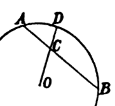

2.2.2 饱和度（Saturation）
*饱和度 是指颜色的浓淡程度。以其对比标准的不同，被区分为 光学饱和度（Colorfulness） 和 感官饱和度（Saturation） [10]。光学饱和度多用于工程，感官饱和度则多用于艺术设计中。
从定义的角度来看，显然感官饱和度的主观成分较大。虽然色彩的光学饱和度和感官饱和度在概念上面存在较大差异。但是实际工程实践中，这两个通常被混为一谈（虽然这么做并不严谨）。工程师们经常以光学饱和度（Colorfulness）为主，将两个概念统称为饱和度（Saturation）。因此，我们这里使用的饱和度，即代指光学饱和度（Colorfulness）[11]。
在描述的格拉斯曼颜色推算过程中，我们提到过。将其单独抽出来看：

图 2.2.2-1 格拉斯曼的饱和度定义说明
其中，D点就是推算颜色 (RD,GD,BD) 的最大饱和度，O点则是纯白光 Opure 。
OC 代表白色分量强度，记为 Da ；
CD 代表纯色分量强度，记为 Db ；
则， D=Da+Db=1 ，记为总强度。
假设 C点的颜色为 (RC,GC,BC)，我们就有：
RC=DaOpure+DbRD=(1−Db)Opure+DbRDGC=DaOpure+DbGD=(1−Db)Opure+DbGDBC=DaOpure+DbBD=(1−Db)Opure+DbBD
而 Db 就是饱和度 S 。整个格拉斯曼颜色混合律就可以用一个公式表示了：
C=(1−S)Opure+S(WACRA+WCBRB)=Opure+S(WACRA+WCBRB−Opure)
如果记白点 O 为无穷小（0）。那么整个式子就可以简化为：
C=S(WACRA+WCBRB)=S⋅D
在已知白点（White Point）和选定色的情况下。依据格拉斯曼饱和度取值，人们可以计算得期望的渐变色泽，从而快速调色。
同 色调（Hue） 一样， 饱和度（Saturation） 也处于简单系统中，不方便体系下的量化。因此，饱和度的概念在现代学界和工业界中，同样也普遍被色度（Chromaticity）配合颜色空间（Color Space）代替表示 ，以便于工程量化计算。 现代色彩体系（Modern Color System） 中的部分方案，对饱和度概念进行了有效的利用转换（可参见后文 2.5.7 颜色三要素色彩空间 ）。